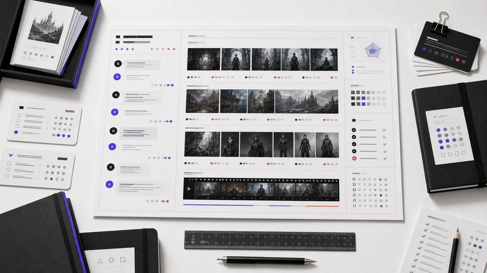
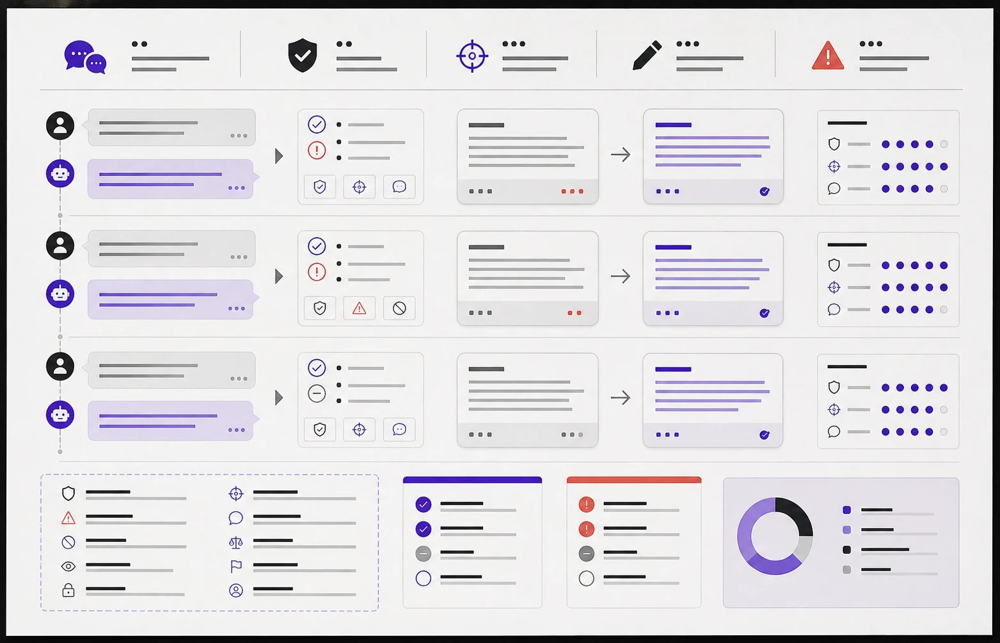
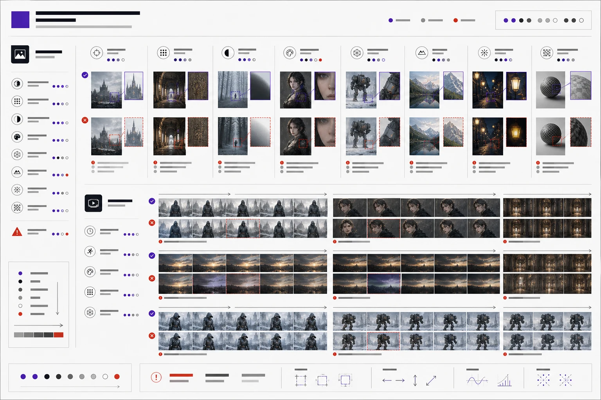

2026 / AI 训练与数据复核
AI Training
Notes
面向 AI Trainer 与模型评测方向的工作方法整理：将对话质量、图像结构与视频表现拆解为稳定的审查视角，以清晰规则支持数据生产、复核和模型迭代。

展示化方法图：对话、图像和视频并非分散任务，而是能够用一致的质量意识进行检查、记录与回流的训练材料。
02
Quality
Quality
Notes
我更关注“为什么失效”和“怎样让下一批数据更好用”，把直觉判断拆成团队能够共同理解的复核语言。

核查回应是否理解目标、信息是否完整、表达是否自然，并将改写方向沉淀为可复用规则。

从语义偏差、结构错误、风格漂移到动态不稳定，为图像和视频建立明确的问题坐标。
审查
快速判断样本是否符合目标，并定位影响使用的核心问题。
标注
用一致维度描述问题，减少不同复核者之间的判断偏差。
归类
汇总高频失败类型，找到 Prompt 或数据策略的改进位置。
自动化
借助 Coze 与 Dify 组织流程，让人工判断集中在真正重要的部分。
此页面呈现的是个人训练方法与经验规模；展示图为作品集视觉化表达，不代替具体业务数据或受约束的内部资料。